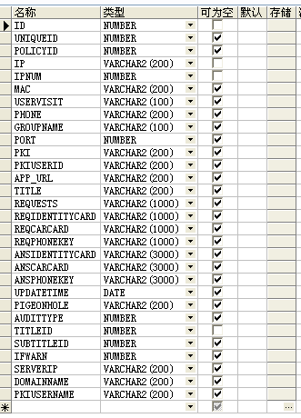
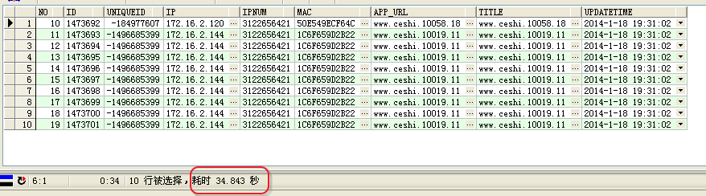
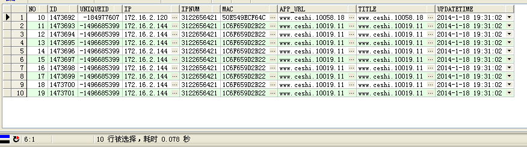
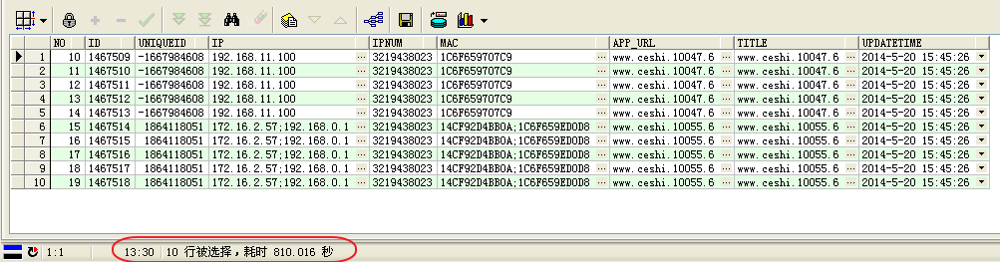
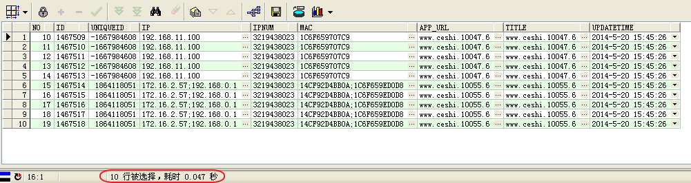
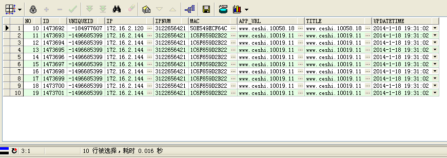
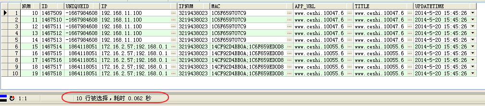

oracle分页技术性能比较
一、前言
在一个有30亿条数据的大表上分页，为了对方案进行性能测试，先忽略其他条件查询的影响，单看下分页部分的性能，顺便考察说明下oracle中rownum使用中一些比较tricky的地方。 实验条件： 表结构如下，内有2千万条实验数据。

二、实验
提供7种不同方式（其实是5种，二和四是一种、三和五是一种）方式的 。第一种只是为了demo一下假设的一种错误逻辑方式，第二种和第四种是一种逻辑正确，但是性能极差的方式。筛选下来看上去性能可行的方式是第五、第六、第七方式。 这里仅仅记录没中方式的执行结果和计划。
方式1
笨笨的想想。Oracle里面不是有个变量叫rownum，顾名思义，就是行号的意思，我要获取第十行到第二十行的数据，sql写起来很精练！比myslq的limit和mssql的top折腾看着还要优雅！
select * from idouba.APP_CLUSTEREDAUDITLOG where rownum between 10 and 20
喔！十条记录执行了十分钟还么有结果，一定是哪儿有问题了，shut了重试。那就来个简单的：
select * from idouba.APP_CLUSTEREDAUDITLOG where rownum =10
也没有记录，再尝试rownum=2都不会有记录。 分析rownum的原理就不难理解。rownum是查询到的结果集中的一个伪列，可以理解成在我们查询到的结果上加序号。按照这个逻辑，写rownum=1是能得到结果集的第一行。执行rownum=2时，先比较第一行，其rownum是1，则扔掉，考察下一行，rownum又是1，直到扫描完整个表，没有满足条件的结果集。 查询计划如下。
已用时间: 00: 04: 01.81
执行计划
----------------------------------------------------------
Plan hash value: 2858290634
--------------------------------------------------------------------------------
| Id | Operation | Name | Rows | Bytes | Cost (%CPU)| Time |
--------------------------------------------------------------------------------
| 0 | SELECT STATEMENT | | 20M| 146G| 102K (1)| 00:20:29 |
| 1 | COUNT | | | | | |
|* 2 | FILTER | | | | | |
| 3 | INDEX FAST FULL SCAN| PK_ID | 20M| 146G| 102K (1)| 00:20:29 |
--------------------------------------------------------------------------------
Predicate Information (identified by operation id):
---------------------------------------------------
2 - filter(ROWNUM=2)
Note
-----
- dynamic sampling used for this statement
统计信息
----------------------------------------------------------
0 recursive calls
0 db block gets
461958 consistent gets
221499 physical reads
0 redo size
1956 bytes sent via SQL*Net to client
374 bytes received via SQL*Net from client
1 SQL*Net roundtrips to/from client
0 sorts (memory)
0 sorts (disk)
0 rows processed</pre>
执行了4分钟，没有得到一条记录。尝试下面的方法。
方法2
明白了rownum的意思，意识到解决问题的办法，是再加一层查询，即里面括号的是我们要的数据，然后从上面选择rownum，其实就是行号为10到20的数据行。
select *
from (select rownum no, Id,uniqueId,IP,IPNum,Mac,app_url,title,updatetime
from idouba.APP_CLUSTEREDAUDITLOG)
where no >= 10
and no < 20;

看到返回的是希望的10到19的记录，但是耗费的时间有点长，达到了34S。 查询计划如下
已选择10行。
已用时间: 00: 00: 35.43
执行计划
----------------------------------------------------------
Plan hash value: 3666119494
--------------------------------------------------------------------------------
| Id | Operation | Name | Rows | Bytes | Cost (%CPU)| Time |
--------------------------------------------------------------------------------
| 0 | SELECT STATEMENT | | 20M| 8965M| 102K (1)| 00:20:29 |
|* 1 | VIEW | | 20M| 8965M| 102K (1)| 00:20:29 |
| 2 | COUNT | | | | | |
| 3 | INDEX FAST FULL SCAN| PK_ID | 20M| 8717M| 102K (1)| 00:20:29 |
--------------------------------------------------------------------------------
Predicate Information (identified by operation id):
---------------------------------------------------
1 - filter("NO"<20 AND "NO">=10)
Note
-----
- dynamic sampling used for this statement
统计信息
----------------------------------------------------------
7 recursive calls
0 db block gets
462193 consistent gets
431581 physical reads
0 redo size
1174 bytes sent via SQL*Net to client
385 bytes received via SQL*Net from client
2 SQL*Net roundtrips to/from client
0 sorts (memory)
0 sorts (disk)
10 rows processed</pre>
方式3
尝试另外一种写法，看起来语义好像也差不多。先取出满足条件的前20条记录，然后在中间选择行号大于10的，即10到20行的记录。
select *
from (select rownum no,Id, uniqueId,IP,IPNum,Mac,app_url,title,updatetime
from idouba.APP_CLUSTEREDAUDITLOG
where rownum < 20)
where no >= 10;

看到结果集，和2相同，但是耗费时间只有，时间是0.078S。问题出在哪儿呢，观察下查询计划。
----------------------------------------------------------
Plan hash value: 2707800419
--------------------------------------------------------------------------------
| Id | Operation | Name | Rows | Bytes | Cost (%CPU)| Time |
--------------------------------------------------------------------------------
| 0 | SELECT STATEMENT | | 19 | 8911 | 3 (0)| 00:00:01 |
|* 1 | VIEW | | 19 | 8911 | 3 (0)| 00:00:01 |
|* 2 | COUNT STOPKEY | | | | | |
| 3 | INDEX FAST FULL SCAN| PK_ID | 20M| 8717M| 3 (0)| 00:00:01 |
--------------------------------------------------------------------------------
Predicate Information (identified by operation id):
---------------------------------------------------
1 - filter("NO">=10)
2 - filter(ROWNUM<20)
Note
-----
- dynamic sampling used for this statement
统计信息
----------------------------------------------------------
7 recursive calls
0 db block gets
264 consistent gets
0 physical reads
0 redo size
1174 bytes sent via SQL*Net to client
385 bytes received via SQL*Net from client
2 SQL*Net roundtrips to/from client
0 sorts (memory)
0 sorts (disk)
10 rows processed
对比2和3的查询计划。不用仔细分析，看计划步骤中间的每一步操作的涉及的行数，以及consistent?gets和physical?reads的不同量级即可理解的差不多。2是把获取所有数据，然后在上面选择10到20的行，3是只获取前20行，从中选择10行之后的数据行。
方式4
方式2中有order by，这是最常见的一种场景了，按照某个列排序，然后去中间某几条记录，其实就是某一页。
select *
from (select rownum no, Id,uniqueId,IP,IPNum,Mac,app_url,title,updatetime
from (select * from idouba.APP_CLUSTEREDAUDITLOG order by Id))
where
no < 20 and
no >= 10

执行了13分钟，获取10行数据。看看查询计划。
执行计划
----------------------------------------------------------
Plan hash value: 2624114486
----------------------------------------------------------------------------
| Id | Operation | Name | Rows | Bytes | Cost (%CPU)| Time |
----------------------------------------------------------------------------
| 0 | SELECT STATEMENT | | 20M| 8965M| 463K (1)| 01:32:40 |
|* 1 | VIEW | | 20M| 8965M| 463K (1)| 01:32:40 |
| 2 | COUNT | | | | | |
| 3 | VIEW | | 20M| 8717M| 463K (1)| 01:32:40 |
| 4 | INDEX FULL SCAN| PK_ID | 20M| 146G| 462K (1)| 01:32:30 |
----------------------------------------------------------------------------
Predicate Information (identified by operation id):
---------------------------------------------------
1 - filter("NO">=10 AND "NO"<20)
Note
-----
- dynamic sampling used for this statement
统计信息
----------------------------------------------------------
7 recursive calls
0 db block gets
460837 consistent gets
210018 physical reads
0 redo size
1196 bytes sent via SQL*Net to client
385 bytes received via SQL*Net from client
2 SQL*Net roundtrips to/from client
0 sorts (memory)
0 sorts (disk)
10 rows processed
方式5
方式3中加上order by条件。
select *
from (select rownum no,
Id,
uniqueId,
IP,
IPNum,
Mac,
app_url,
title,
updatetime
from (select * from idouba.APP_CLUSTEREDAUDITLOG order by Id)
where rownum < 20)
where no >= 10;

和方式2类似，花费时间也是毫秒级。 查询计划
执行计划
----------------------------------------------------------
Plan hash value: 3021574494
----------------------------------------------------------------------------
| Id | Operation | Name | Rows | Bytes | Cost (%CPU)| Time |
----------------------------------------------------------------------------
| 0 | SELECT STATEMENT | | 19 | 8911 | 3 (0)| 00:00:01 |
|* 1 | VIEW | | 19 | 8911 | 3 (0)| 00:00:01 |
|* 2 | COUNT STOPKEY | | | | | |
| 3 | VIEW | | 20M| 8717M| 3 (0)| 00:00:01 |
| 4 | INDEX FULL SCAN| PK_ID | 20M| 146G| 2 (0)| 00:00:01 |
----------------------------------------------------------------------------
Predicate Information (identified by operation id):
---------------------------------------------------
1 - filter("NO">=10)
2 - filter(ROWNUM<20)
Note
-----
- dynamic sampling used for this statement
统计信息
----------------------------------------------------------
7 recursive calls
0 db block gets
240 consistent gets
2 physical reads
0 redo size
1196 bytes sent via SQL*Net to client
385 bytes received via SQL*Net from client
2 SQL*Net roundtrips to/from client
0 sorts (memory)
0 sorts (disk)
10 rows processed
方式6
使用minus
select rownum no, Id, uniqueId, IP, IPNum, Mac, app_url, title, updatetime from idouba.APP_CLUSTEREDAUDITLOG where rownum < 20
minus
select rownum no, Id, uniqueId, IP, IPNum, Mac, app_url, title, updatetime from idouba.APP_CLUSTEREDAUDITLOG where rownum < 10

对应查询计划如下
执行计划
----------------------------------------------------------
Plan hash value: 944274637
-----------------------------------------------------------------------------------------
| Id | Operation | Name | Rows | Bytes |TempSpc| Cost (%CPU)| Time |
-----------------------------------------------------------------------------------------
| 0 | SELECT STATEMENT | | 19 | 12768 | | 5463K (51)| 18:12:46 |
| 1 | MINUS | | | | | | |
| 2 | SORT UNIQUE | | 19 | 8664 | 17G| 2731K (1)| 09:06:23 |
|* 3 | COUNT STOPKEY | | | | | | |
| 4 | INDEX FAST FULL SCAN| PK_ID | 20M| 8717M| | 102K (1)| 00:20:29 |
| 5 | SORT UNIQUE | | 9 | 4104 | 17G| 2731K (1)| 09:06:23 |
|* 6 | COUNT STOPKEY | | | | | | |
| 7 | INDEX FAST FULL SCAN| PK_ID | 20M| 8717M| | 102K (1)| 00:20:29 |
-----------------------------------------------------------------------------------------
Predicate Information (identified by operation id):
---------------------------------------------------
3 - filter(ROWNUM<20)
6 - filter(ROWNUM<10)
Note
-----
- dynamic sampling used for this statement
统计信息
----------------------------------------------------------
0 recursive calls
0 db block gets
58 consistent gets
0 physical reads
0 redo size
1174 bytes sent via SQL*Net to client
385 bytes received via SQL*Net from client
2 SQL*Net roundtrips to/from client
2 sorts (memory)
0 sorts (disk)
10 rows processed
方式7：
采用row_number()解析函数
SELECT num, Id, uniqueId, IP, IPNum, Mac, app_url, title, updatetime FROM(
SELECT Id, uniqueId, IP, IPNum, Mac, app_url, title, updatetime,row_number() over(ORDER BY Id)AS num
FROM idouba.APP_CLUSTEREDAUDITLOG t
) WHERE num BETWEEN 10 AND 19;

执行计划如下：
执行计划
----------------------------------------------------------
Plan hash value: 1698779179
--------------------------------------------------------------------------------
| Id | Operation | Name | Rows | Bytes | Cost (%CPU)| Time |
--------------------------------------------------------------------------------
| 0 | SELECT STATEMENT | | 20M| 8965M| 463K (1)| 01:32:40 |
|* 1 | VIEW | | 20M| 8965M| 463K (1)| 01:32:40 |
|* 2 | WINDOW NOSORT STOPKEY| | 20M| 8717M| 463K (1)| 01:32:40 |
| 3 | INDEX FULL SCAN | PK_ID | 20M| 8717M| 462K (1)| 01:32:30 |
--------------------------------------------------------------------------------
Predicate Information (identified by operation id):
---------------------------------------------------
1 - filter("NUM">=10 AND "NUM"<=19)
2 - filter(ROW_NUMBER() OVER ( ORDER BY "ID")<=19)
Note
-----
- dynamic sampling used for this statement
统计信息
----------------------------------------------------------
4 recursive calls
0 db block gets
123 consistent gets
0 physical reads
0 redo size
1197 bytes sent via SQL*Net to client
385 bytes received via SQL*Net from client
2 SQL*Net roundtrips to/from client
0 sorts (memory)
0 sorts (disk)
10 rows processed
1 - filter(“NUM”>=10 AND “NUM”<=19) 2 - filter(ROW_NUMBER() OVER ( ORDER BY “ID”)<=19)
Note
- dynamic sampling used for this statement
统计信息
三、总结
为了简单期间，只是从2千万条记录中查询10到20行的数据。考察发现如下三种方式性能上是可以接受的3、5、6、7写法是可以接受的（3和5其实差不多，如果如实验所示，在order?by列上是索引聚集的话），都是毫秒级可以出结果。 但是当查询后若干条记录的时候，如一千万行的前十行记录。每种也都需要几分钟的执行时间。
- 使用row_number函数
SELECT num, Id, uniqueId, IP, IPNum, Mac, app_url, title, updatetime FROM(
SELECT t.*,row_number() over(ORDER BY Id )AS num
FROM idouba.APP_CLUSTEREDAUDITLOG t
)
WHERE num BETWEEN 9999990 AND 10000000;
-
三层的select
select * from (select rownum no, Id, uniqueId, IP, IPNum, Mac, app_url, title, updatetime from (select * from idouba.APP_CLUSTEREDAUDITLOG order by Id) where rownum < 10000000) where no >= 9999990; -
使用minus关键字
select rownum no, Id, uniqueId, IP, IPNum, Mac, app_url, title, updatetime from (select * from idouba.APP_CLUSTEREDAUDITLOG order by Id) where rownum < 10000000 minus select rownum no, Id, uniqueId, IP, IPNum, Mac, app_url, title, updatetime from (select * from idouba.APP_CLUSTEREDAUDITLOG order by Id) where rownum < 9999990
性能比较如下：
| 使用row_number函数 | 三层的select | 使用minus关键字 | |
|---|---|---|---|
| 第1000万行前面10行 | 766.234 | 404.125 | 795.562 |
| 第100万行前面10行 | 12.468 | 12.438 | 26.125 |
| 第10万行前面10行 | 1.265 | 1.125 | 1.5 |
| 第1万行前面10行 | 0.329 | 0.312 | 0.25 |
| 第1000行前面10行 | 0.438 | 0.468 | 0.203 |
| 第100行前面10行 | 0.25s | 0.219s | 0.265 |
五、最后
本来到这里几种对照就应该结束了。尤其是场景2和场景4，场景3和场景5只是多了个order by子句，因为本来就是以ID列为主键的索引组织表。理解就是按照ID顺序来存记录的，则是否显示的写order by子句应该没有影响，却观察到2、3的结果和4、5的结果不一样呢/sp为了主题集中期间，这个问题放在下一篇介绍。
附：
CREATE TABLE "idouba"."APP_CLUSTEREDAUDITLOG"
( "ID" NUMBER NOT NULL ENABLE,
"UNIQUEID" NUMBER,
"POLICYID" NUMBER,
"IP" VARCHAR2(200) NOT NULL ENABLE,
"IPNUM" NUMBER NOT NULL ENABLE,
"MAC" VARCHAR2(200),
"USERVISIT" VARCHAR2(100),
"PHONE" VARCHAR2(200),
"GROUPNAME" VARCHAR2(100),
"PORT" NUMBER,
"PKI" VARCHAR2(200),
"PKIUSERID" VARCHAR2(200),
"APP_URL" VARCHAR2(200),
"TITLE" VARCHAR2(200),
"REQUESTS" VARCHAR2(1000),
"REQIDENTITYCARD" VARCHAR2(1000),
"REQCARCARD" VARCHAR2(1000),
"REQPHONEKEY" VARCHAR2(1000),
"ANSIDENTITYCARD" VARCHAR2(3000),
"ANSCARCARD" VARCHAR2(3000),
"ANSPHONEKEY" VARCHAR2(3000),
"UPDATETIME" DATE,
"PIGEONHOLE" VARCHAR2(200),
"AUDITTYPE" NUMBER,
"TITLEID" NUMBER NOT NULL ENABLE,
"SUBTITLEID" NUMBER,
"IFWARN" NUMBER,
"SERVERIP" VARCHAR2(200),
"DOMAINNAME" VARCHAR2(200),
"PKIUSERNAME" VARCHAR2(200),
CONSTRAINT "PK_ID" PRIMARY KEY ("ID") ENABLE
) ORGANIZATION INDEX NOCOMPRESS PCTFREE 10 INITRANS 2 MAXTRANS 255 LOGGING
STORAGE(INITIAL 65536 NEXT 1048576 MINEXTENTS 1 MAXEXTENTS 2147483645
PCTINCREASE 0 FREELISTS 1 FREELIST GROUPS 1 BUFFER_POOL DEFAULT)
TABLESPACE "USERS"
PCTTHRESHOLD 50 OVERFLOW
PCTFREE 10 PCTUSED 40 INITRANS 1 MAXTRANS 255 LOGGING
STORAGE(INITIAL 16384 NEXT 1048576 MINEXTENTS 1 MAXEXTENTS 2147483645
PCTINCREASE 0 FREELISTS 1 FREELIST GROUPS 1 BUFFER_POOL DEFAULT)
TABLESPACE "USERS" ;
CREATE UNIQUE INDEX "idouba"."PK_ID" ON "idouba"."APP_CLUSTEREDAUDITLOG" ("ID")
PCTFREE 10 INITRANS 2 MAXTRANS 255
STORAGE(INITIAL 65536 NEXT 1048576 MINEXTENTS 1 MAXEXTENTS 2147483645
PCTINCREASE 0 FREELISTS 1 FREELIST GROUPS 1 BUFFER_POOL DEFAULT)
TABLESPACE "USERS" ;
ALTER TABLE "idouba"."APP_CLUSTEREDAUDITLOG" ADD CONSTRAINT "PK_ID" PRIMARY KEY ("ID")
USING INDEX PCTFREE 10 INITRANS 2 MAXTRANS 255
STORAGE(INITIAL 65536 NEXT 1048576 MINEXTENTS 1 MAXEXTENTS 2147483645
PCTINCREASE 0 FREELISTS 1 FREELIST GROUPS 1 BUFFER_POOL DEFAULT)
TABLESPACE "USERS" ENABLE;
ALTER TABLE "idouba"."APP_CLUSTEREDAUDITLOG" MODIFY ("ID" NOT NULL ENABLE);
ALTER TABLE "idouba"."APP_CLUSTEREDAUDITLOG" MODIFY ("IP" NOT NULL ENABLE);
ALTER TABLE "idouba"."APP_CLUSTEREDAUDITLOG" MODIFY ("IPNUM" NOT NULL ENABLE);
ALTER TABLE "idouba"."APP_CLUSTEREDAUDITLOG" MODIFY ("TITLEID" NOT NULL ENABLE);
ALTER TABLE "YUANWANG"."APP_CLUSTEREDAUDITLOG" ADD CONSTRAINT "PK_ID" PRIMARY KEY ("ID")
ALTER TABLE “YUANWANG”.“APP_CLUSTEREDAUDITLOG” MODIFY (“ID” NOT NULL ENABLE);
ALTER TABLE “YUANWANG”.“APP_CLUSTEREDAUDITLOG” MODIFY (“IP” NOT NULL ENABLE);
ALTER TABLE “YUANWANG”.“APP_CLUSTEREDAUDITLOG” MODIFY (“IPNUM” NOT NULL ENABLE);
ALTER TABLE “YUANWANG”.“APP_CLUSTEREDAUDITLOG” MODIFY (“TITLEID” NOT NULL ENABLE);